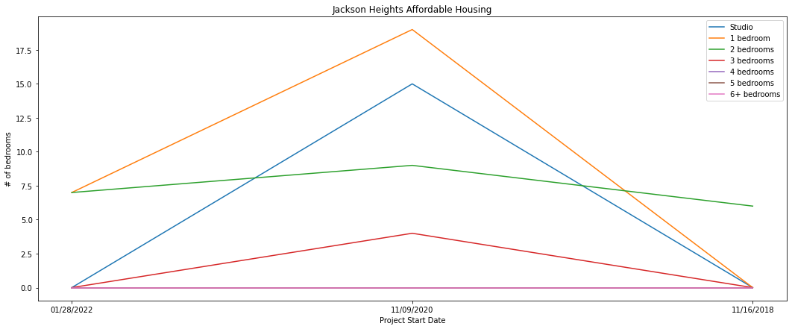
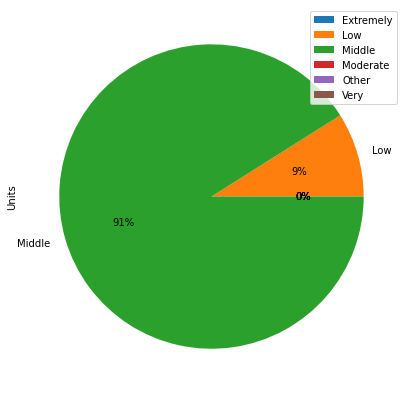
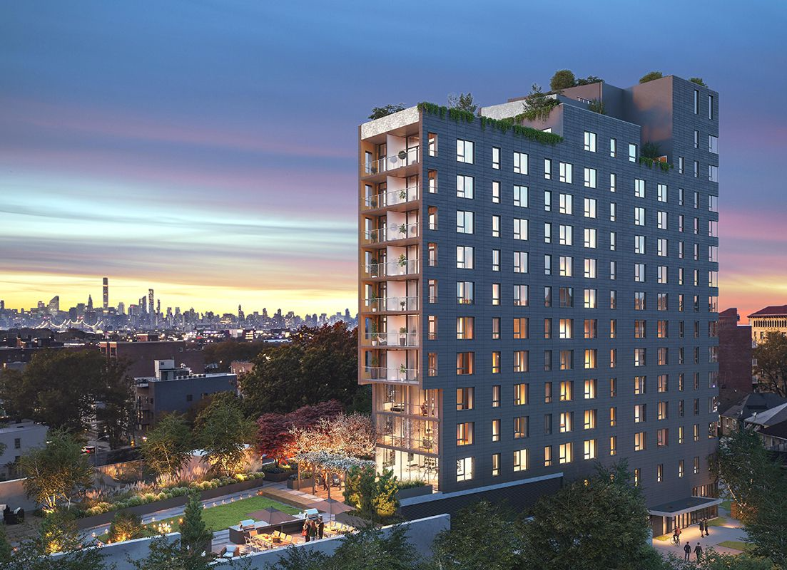

Demographics & Statistics: HC2
Jackson Heights is a neighborhood located in the upper east side of Queens. It resides in zip code 11372 and has a total population of about 180,000 people1. The neighborhood is one of the most diverse areas in the city, with statistics showing that the majority of the population, 59.74% to be exact, are foreign born and that only around 21% of households solely speak English2. As such, the neighborhood is home to a variety of languages and cultures, with its Hispanic and South Asian communities that, together, make up nearly 80% of the population, being the most noted2. It is also one of the more affordable neighborhoods in the city, as the median house value is only $346,000 compared to New York’s overall value of $745,000. Comparatively, the average price of rent in New York is $3,975, while for Jackson Heights this number is only $1,5162. Consequently, many New Yorkers in high-priced neighborhoods have found themselves drawn to the area’s housing, which ranges from pre-war apartments to brand new condos3. The neighborhood's lack of housing variety in the past was actually a problem, as immigrants moving into the neighborhood could not afford to live in the old-style English garden homes that had filled the neighborhood. Residents took great measures to fix this overcrowding issue and created housing projects that made apartment complexes become co-ops so that there was more housing available for the residents. The Business Improvement District (BID) was also formed by the neighborhood with the goal of improving its businesses and housing4.
| Zip Code | 11372 |
| Median Age | 40.6 |
| Median Household Income | $60,659 |
| Below Poverty Line | 12.79% |
| Unemployed Rate | 4.9% |
| Median House Value | $346,000 |
| Median Rent | $1,516 |
Neighborhood Rankings: HC3
Jackson Heights has an overall ranking of B on Niche, with its highest and lowest rankings being an A+ in Nightlife and a D in housing. The rest of this ranking sees A's in Diversity, Health and Fitness, and Outdoor Activities, B's in Public School's, Good for Families, Weather, and Commute, and a C- in Cost of Living. Out of all neighborhoods on Niche, Jackson Heights ranks 148th, which is the lowest from our neighborhoods. The neighborhood also ranks lowest from the four in StreetAdvisor and DNA Crime and Safety, with a rating of 4.5/10 and 20th safest, respectively. These low ratings persist, despite reviews from StreetAdvisor describing the neigborhood as a charming and fun place to live in, with lots of diversity, amazing restaurants and community gardens, relatively affordable rent, and a short commute to Manhattan. This commute also factors into its WalkScore, a ranking of a neighborhood's transit system, including both train and bus systems as well as streets and sidewalks, which Jackson Heights ranks 71st out of the whole city in.
Data Exploration & Data Analysis: HC7/HC8
Out of the four neighborhoods, Jackson Heights has the least amount of housing projects, though, this is to be expected, as it is the smallest of the neighborhoods and only has one postal code. However, its total units of 226 units is also far below 819 units, which is the mean per postal code. The "Jackson Heights Affordable Housing" graph shows that there was a rise in the construction of units near the end of 2020, and this can be due to the increase in rent prices following Covid. As the "# of bedrooms" pie chart displays, the majority of units constructed are 1-BR and 2-BR types, which is the norm for most affordable housing projects. This is followed by Studio and 3-BR units only, as Jackson Heights, similar to the other 3 neighborhoods and most of the housing projects in the data set, has no 4-BR, 5-BR, and 6-BR+ units.
Jackson Heights Affordable Housing Graph

Jackson Heights '#of bedrooms' Pie Chart
As for the income type of the units, Jackson Heights has a surprising majority of "Middle Income Units", followed by a small amount of "Low Income Units". The majority of housing units in a neighborhood are usually either "Low Income" or "Very Low Income" units, and this means that the affordable housing in Jackson Heights require a larger income to reside in than in other housing projects. This points towards the gentrification of the neigborhood, as people with higher incomes are most likely the ones moving into these newly constructed buildings, as seen with the 'Roosevelt Parc Apartments'.
Jackson Heights 'Income Type' Pie Chart
